Team Leading
The art of being expendable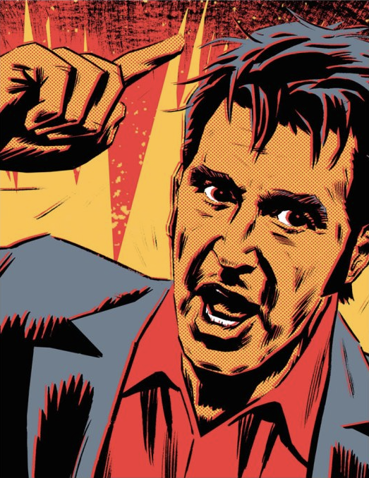
Matteo Di Paolantonio 22/11/2021
Agenda
- The teamlead himself / herself
- The teammates
- The project
- The client
THE TEAMLEAD
“ Listen to me, Marvin, I'm a c...
...listen to me, Marvin Nash, I'm a cop. ”
The goal
- Being expendable
- Cohesive and autonomous team
- Having the team spinning forever
A jack of all trades
“ master of none though oftentimes better than master of one ”
- Tech lead
- Architect
- DevOps
- Project manager
- Product owner
- Senior dev
- Mentor
- ...
The unblocker
- Issues
- Doubts
- Fires
- Requirements
- Risks
- Meetings
- Chats
- Pairings
- Deadlines
- ...
clean and tidy house
Calendar and cerimonies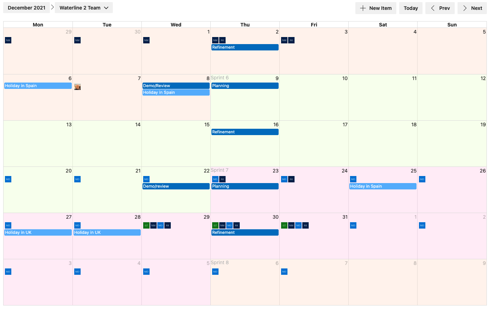
clean and tidy house
Wiki
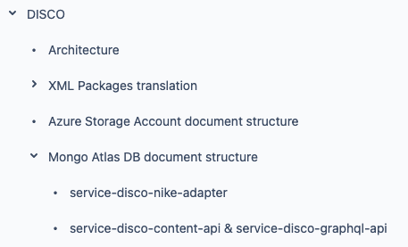
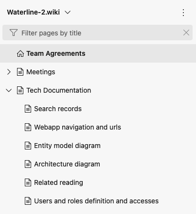
clean and tidy house
Interfaces and APIs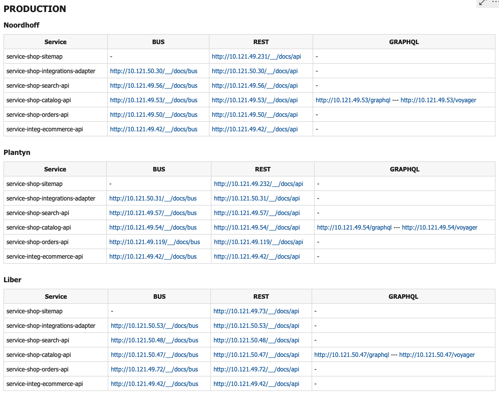
clean and tidy house
Architecture diagram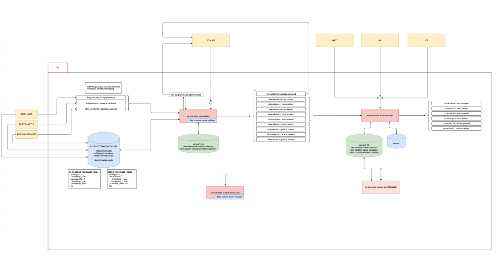
clean and tidy house
Boards and tickets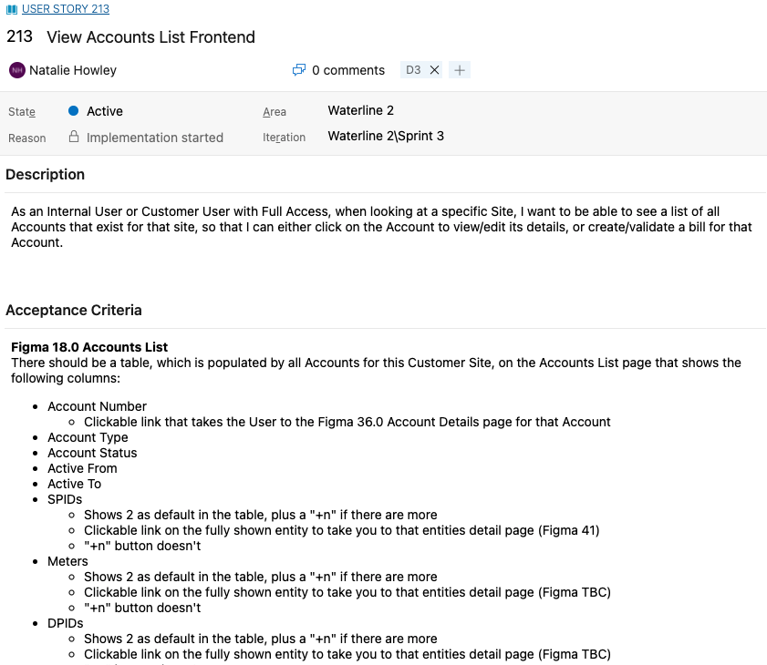
delegating and guarding
“ Concealed within his fortress, the lord of Mordor sees all. ”
team shape matters

Scenarios
- One senior plus
- No seniors and one medior plus
- One team lead (not you)
actions and words matter
- Be an example
- Assertive, transparent and backed by facts communication
Kindly reminder
“ I hate losing more than I even wanna win. ”
THE TEAMMATES
The basics
- Processes
- Agreements
- Expectations
Team Agreements
Team Agreements
Communication
- When a non trivial issue / problem is reported on slack the team is committed to not reply to the client until we research the problem and solution. Our first response will be that we’re going to look for the problem and then, if needed, we’ll create a ticket. Then, we’ll come back to the client when we know what is happening and how we can solve it.
- We should try to reply as much as possible to slack messages using threads in order to reduce noise at a minimum.
- If we need to start a conversation about any concern/question that might be interesting for the team, we’ll always do it in the public channel.
- If we are asked about questions that could be interesting for the team on a private channel, we’ll try to move the conversation to the public channel and remind it is better to speak in the public channel so everybody can be aware of the issue.
Team Agreements
Naming convention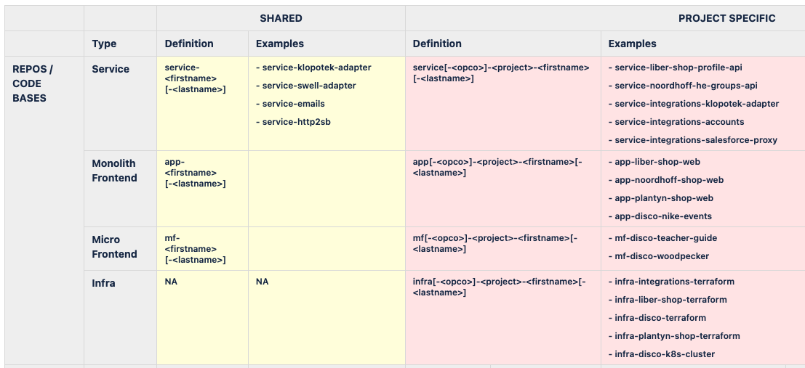
Team Agreements
Code management
Commits
<type>: <subject>
<BLANK LINE>
<body> → optional
<BLANK LINE>
#<ticketID> → optional
Branches
chore: polishing adjustments.
cicd: docker & cicd adjustments.
feat: new capabilities.
fix: bug, hotfix, etc.
refactor: enhancements.
style: changes in styles.
test: test.
docs: docs.
other: whatever.
Pull requests
What’s the focus of this PR
<info>
How to review this PR
<info>
Related work items --> optional
* <info>
* <info>
Before submitting this I made sure:
[] The code builds without any errors
[] I'm using our guidelines
[] I've added tests
Team Agreements
Tasks management
Backlog items
- It is the single source of truth
- It follows the defined template
- It is specific enough for call to action
- It is understood by the team
- It has no blockers
Definition of done
- It’s merged on the main branch
- It is deployed on production
- Meets the acceptance criteria
Team Agreements
Demos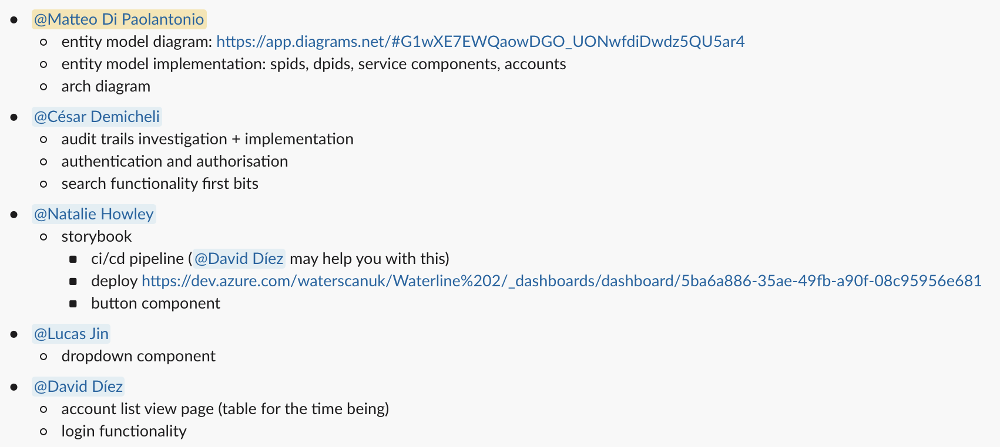
One on one
First one- How would you like to receive feedback ?
- What do you look for in a manager ?
- How do you see yoursefl in your current role ?
- Where do you get motivation from ?
- What do you like to do in your spare time ?
One on one
Following ones- Deal with issues, problems, conflicts, etc.
- Give and receive feedback
- Career development and goals follow up
- Team, client, project, role, etc.
Retros
retrotool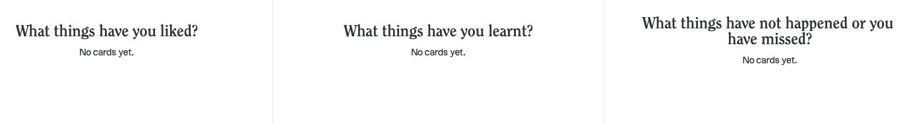
Teammates relationships
- Fostering relationships
- Virtual coffees
- Pairing
- Team building events
Team members tasks
slightly over their capabilities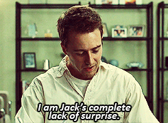
Safety nets
- Testing
- Different environments
- Shit umbrella
Every person is a whole world

- Be kind
- Listen
- Watch out for signs
THE PROJECT
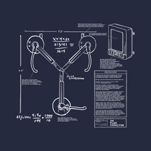
- Running smoothly
- Being delivered on time
- Flying a plane
- Security nets and parachutes
Platform
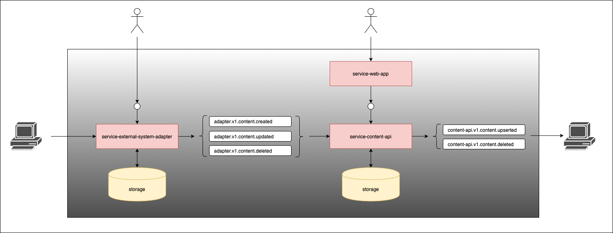CI/CD
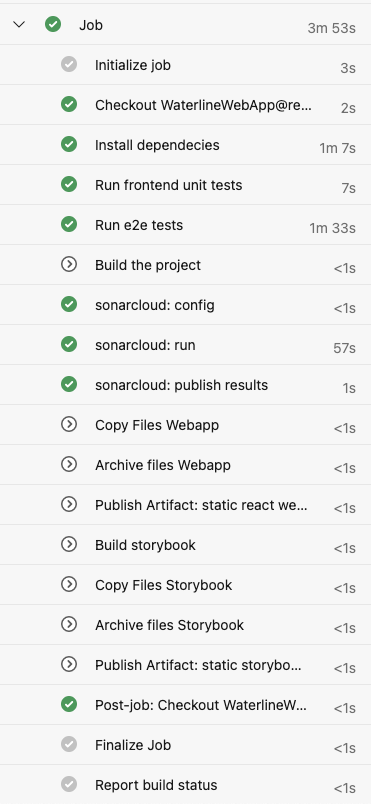
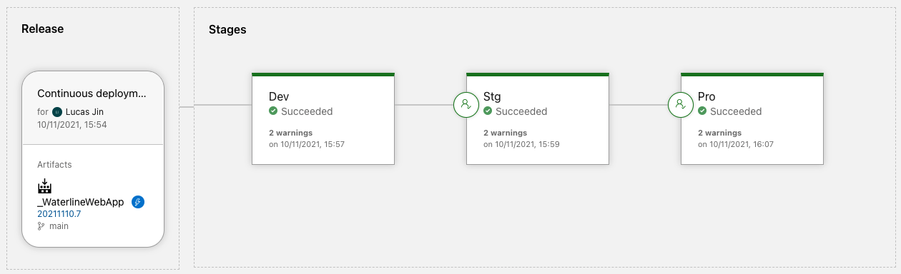
infrastructure
resource "azurerm_mssql_server" "mssql_server" {
name = "waterline-mssql-server-${var.environment}"
location = var.resource_group_location
resource_group_name = var.resource_group_name
version = "12.0"
administrator_login = var.mssql_server_admin_user
administrator_login_password = random_password.mssql_password.result
tags = {
source = "terraform"
environment = var.environment,
}
}
module "mssql_databases" {
source = "./mssql_databases"
environment = var.environment
mssql_server_id = azurerm_mssql_server.mssql_server.id
}
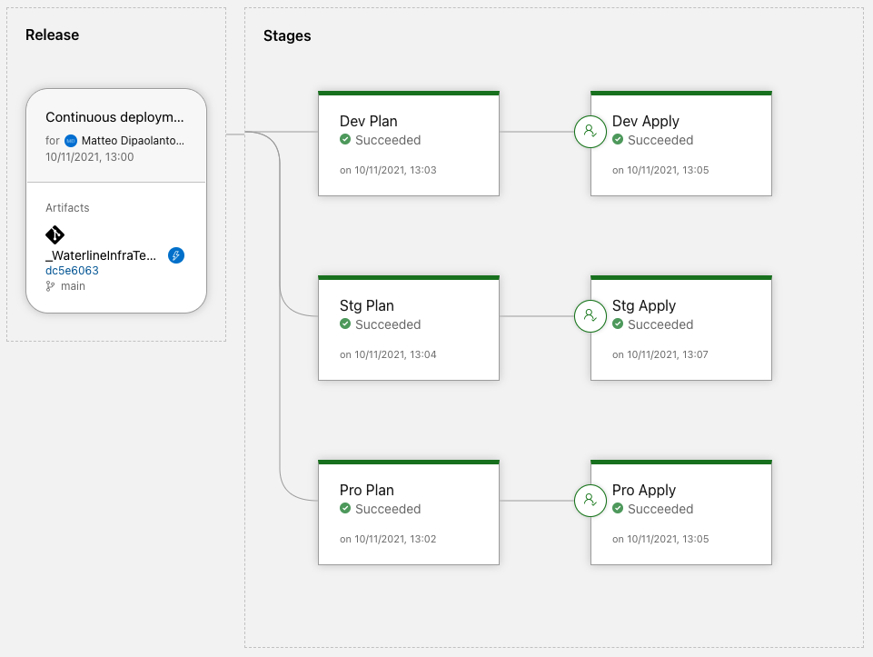
Docs and Validation
Security Net and a Common Language
Sync interfaces docs
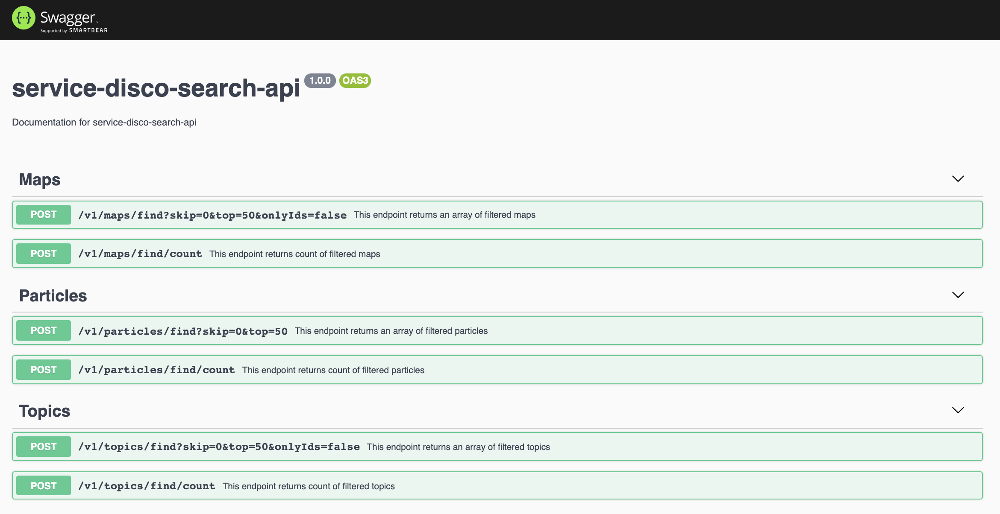Sync interfaces docs
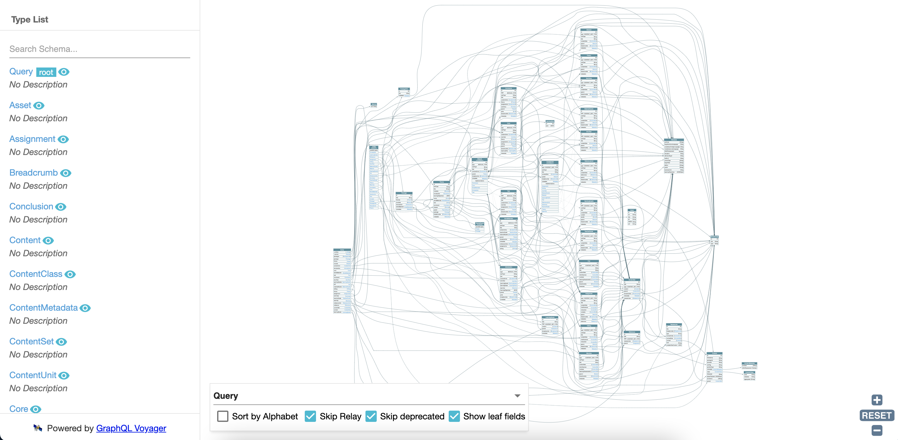Sync interfaces validation
/**
* GET /v2/packages/{packageId}/translationsHistory
* @summary This endpoint returns the package's translation history
* @tags Nike data processing v2
* @param {string} packageId.path.required Package ID
* @param {number} offset.query Offset (default: 0)
* @param {number} limit.query Limit (default: 50)
* @return {TranslationsHistoryResponse} 200 - Successful response
* @return {ErrorServerResponse} 500 - Server error
* @return {NotFoundResponse} 404 - Not found
* @return {BadRequestResponse} 400 - Bad request
*/
app.get('/v2/packages/:packageId/translationsHistory', ExpressJoi({
params: {
packageId: Joi.string().regex(/^[a-zA-Z0-9-_.]+$/).required(),
},
query: {
offset: Joi.number().min(0).optional(),
limit: Joi.number().min(1).optional(),
},
}), async (req, res, next) => {
const { packageId } = req.params;
const { offset, limit } = req.query;
try {
const translationsHistory = await controller.v2.api.getTranslationsHistory(packageId, offset, limit);
return res.json(translationsHistory);
} catch (err) {
if (err.message === 'content_not_found') return next(tagError({ type: 'not_found', message: `Translation history for package ${packageId} was not found` }));
return next(tagError(err));
}
});
Async interfaces docs
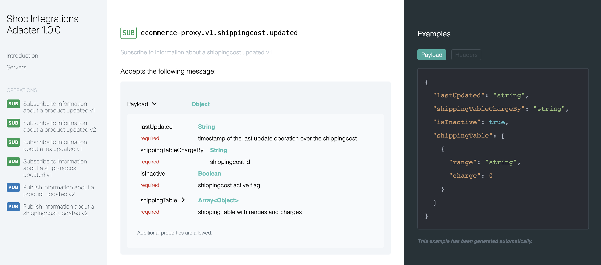Async interfaces validation
channels:
ecommerce-proxy.v1.shippingcost.updated:
subscribe:
summary: Subscribe to information about a shippingcost updated v1
operationId: integrationsShippingcostUpdated
message:
$ref: "#/components/messages/ecommerce-proxy-v1-shippingcost-updated"
components:
messages:
integrations-adapter-v2-shippingcost-updated:
contentType: application/json
payload:
$ref: "#/components/schemas/integrations-adapter-v2-shippingcost-updated-message-schema"
schemas:
integrations-adapter-v2-shippingcost-updated-message-schema:
type: object
required:
- lastUpdatedTimestamp
- type
- isInactive
- shippingTable
properties:
lastUpdatedTimestamp:
type: string
description: timestamp of the last update operation over the shippingcost made in integrations
type:
type: string
description: shippingcost id
isInactive:
type: boolean
description: shippingcost active flag
shippingTable:
type: array
description: shipping table with ranges and charges
items:
type: object
required:
- range
- charge
properties:
range:
type: string
description: range minimum order cost
charge:
type: number
description: charge to apply to the minimum order cost
Async interfaces validation
const updateShippingCost = subscription => async ({ body: integrationsShippingCost }) => {
const shippingCostType = integrationsShippingCost.shippingTableChargeBy
try {
validator.validateSubscribePayload(subscription, integrationsShippingCost)
logger.info(`Subscription: ${subscription} message processing started for shippingCost: ${shippingCostType}`)
const storedShippingCost = await mongodb.v2.shippingcosts.getShippingCostByType(shippingCostType)
const shouldNotUpsert = storedShippingCost ? storedShippingCost.lastUpdateTimestamp >= integrationsShippingCost.lastUpdated : false
if (shouldNotUpsert) {
logger.info(`Subscription: ${subscription} message processing skipped for shippingCost: ${shippingCostType}`)
return
}
const shippingCost = parser(integrationsShippingCost)
await mongodb.v2.shippingcosts.upsertShippingCost(shippingCost)
await bus.v2.ecommerce.publish('shippingCostUpdated')(shippingCost)
monitor.trackShippingCostUpdatedSuccess()
logger.info(`Subscription: ${subscription} message processing succeed for shippingCost: ${shippingCostType}`)
} catch (err) {
monitor.trackShippingCostUpdatedFail()
logger.error(`Subscription: ${subscription} message processing failed for shippingCost: ${shippingCostType}. Error: ${err.message}`)
throw err
}
}
Backoffice sync interfaces
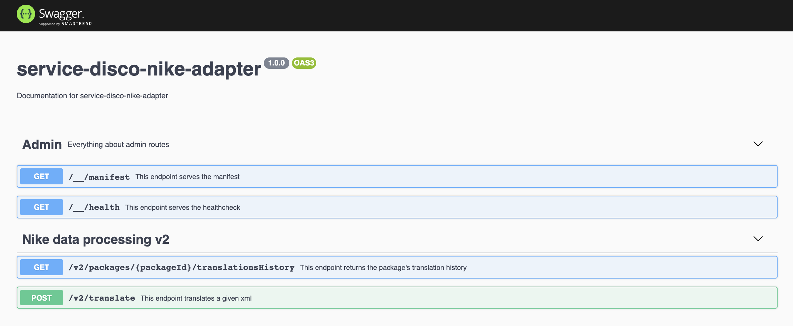Ad hoc docs
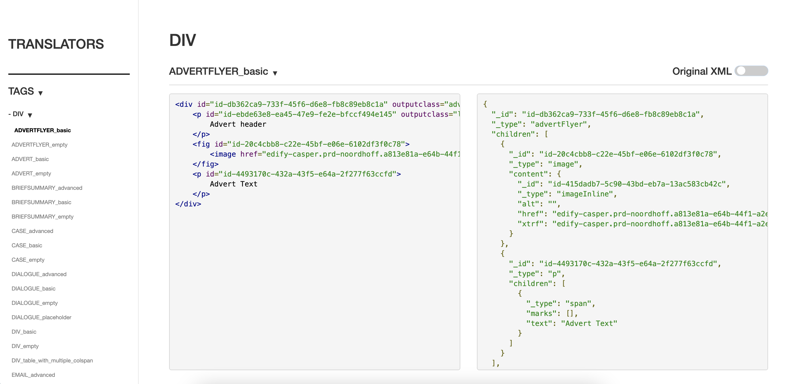Monitoring and Alerting
Security Net and a Common Language
Events
-
PERFORMACE
- cpu / memory consumption
- restarts
-
INFRASTRUCTURE
- DBs / Storages / Buckets usage
- Message Broker status
-
INGESTION
- content deltas / processed / indexed
-
RETRIEVAL
- content retrieved / requested / published
Azure setup
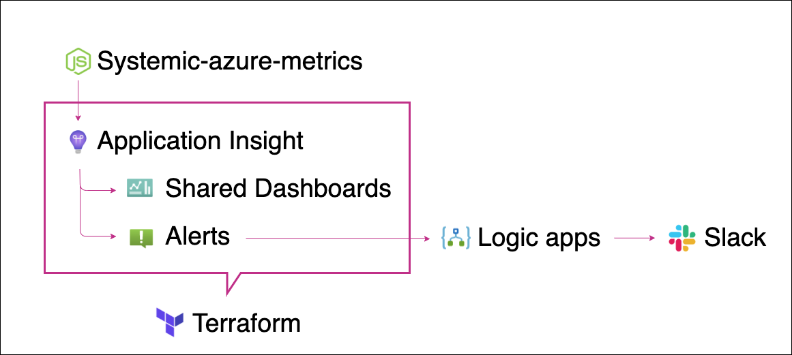PERFORMACE
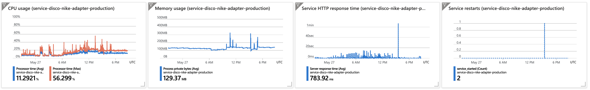INFRASTRUCTURE
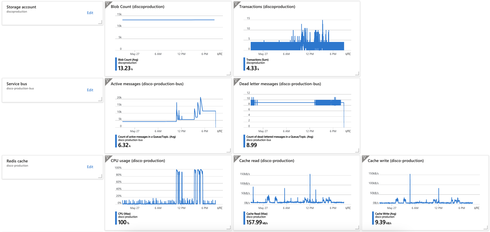INGESTION
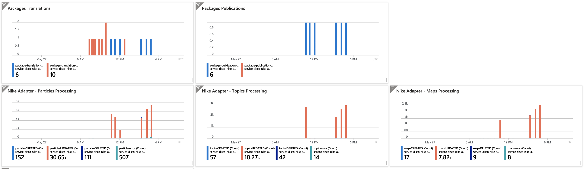RETRIEVAL
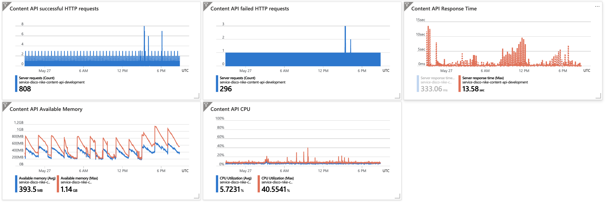RETRIEVAL
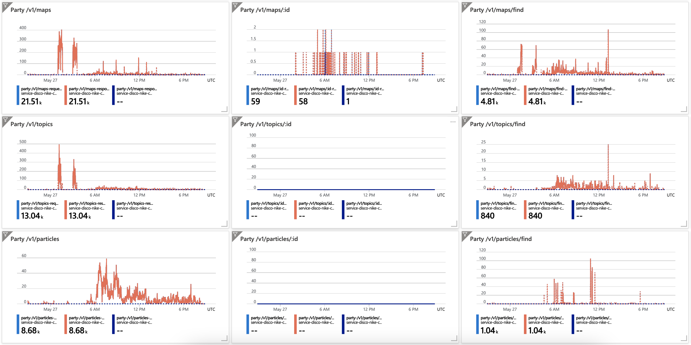Alerts
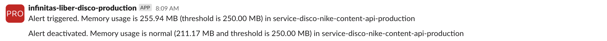Testing
Security Net and a Common LanguageBusiness logic flows
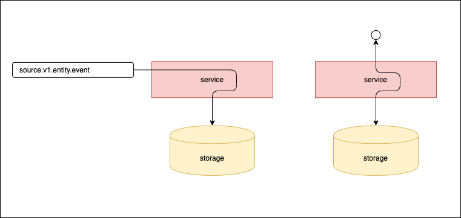Integration Async
describe('[Integration-Tests] - V2 BUS - Shipping cost', async () => {
it('Should process integrations shipping cost', async () => {
const shippingCostType = integrationsShippingCost.shippingTableChargeBy
await busComponent.v2.integrations.publish('shippingCostUpdated')(integrationsShippingCost)
await sleep(500)
const storedShippingCost = await storeComponent.v2.shippingcosts.getShippingCostByType(shippingCostType)
expect(storedShippingCost).toEqual(ecommerceShippingCost)
})
})
Integration Sync
describe('[Integration-Tests] - V2 API - Endpoint: /v2/packages/{id}/translationsHistory', async () => {
it('Should retrieve translation history for requested package', async () => {
const response = await request.get(`/v2/packages/${translationData[0].id}/translationsHistory`);
expect(response.status).to.deep.equal(200);
expect(response.body).to.deep.equal(translationHistoryResponse);
});
it('Should return 404 if history for requested package does not exists', async () => {
const response = await request.get('/v2/packages/123/translationsHistory');
expect(response.status).to.deep.equal(404);
expect(response.body.message).to.deep.equal('Translation history for package 123 was not found');
});
});
Unit
describe('[Unit-Tests] - V2 - shipping costs parser', () => {
it('Should parse an integrations shipping cost', () => {
const result = parser(integrationsShippingCost)
expect(result).toEqual(ecommerceShippingCost)
})
})
Folders structure
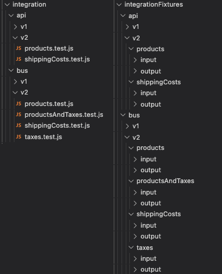 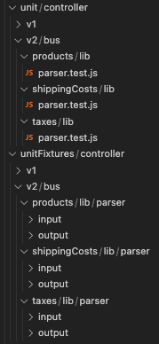Tasks assignation
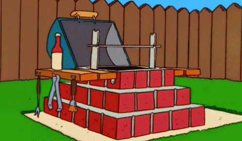
- slightly over their capabilities
-
what is left?
- silly and dumb tasks
- extremely hard tasks
Empowering with ownership

The full journey
- User story understanding
- Client interaction
- Code implementation
- Testing
- PR comments and approval
- Deployment to stg and pro
- Demo
THE CLIENT
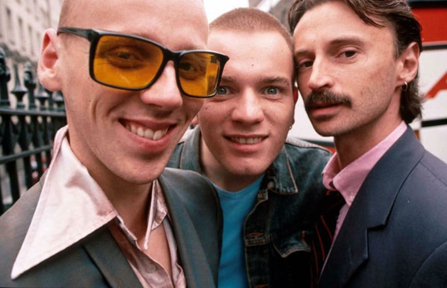
The basics
- Transparency
- Common language
- Managing expectations
Transparency
- Agile cerimonies
- Direct communication
- For better or for worse
Common language
- Boards and wikis
- Tech is easy
- Platforms are easy
Managing expectations
- Honesty
- Team's velocity
- Team's blockers and issues
Providing value
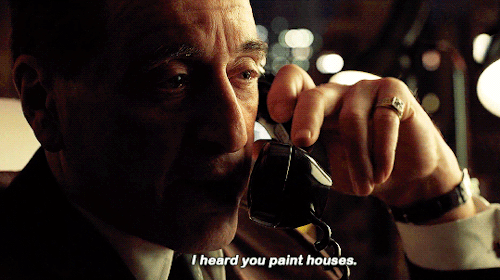
- Release to prod
- To code or not to code
Build trust
“ It is not about the money it's about sending a message ”
Thank you
“ Projects will end, clients will come and go, companies will fall and rise, and all we have left are the human relationships we managed to create ”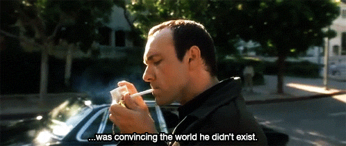